Затишний будиночок у карпатському стилі,сауна, найбільші в місті чани і зона барбек'ю - це не казка, це - Хутір Чан Ідеально для відпочинку і святкування дня народження, заручин, корпоративу та інших важливих подій у вашому житті |
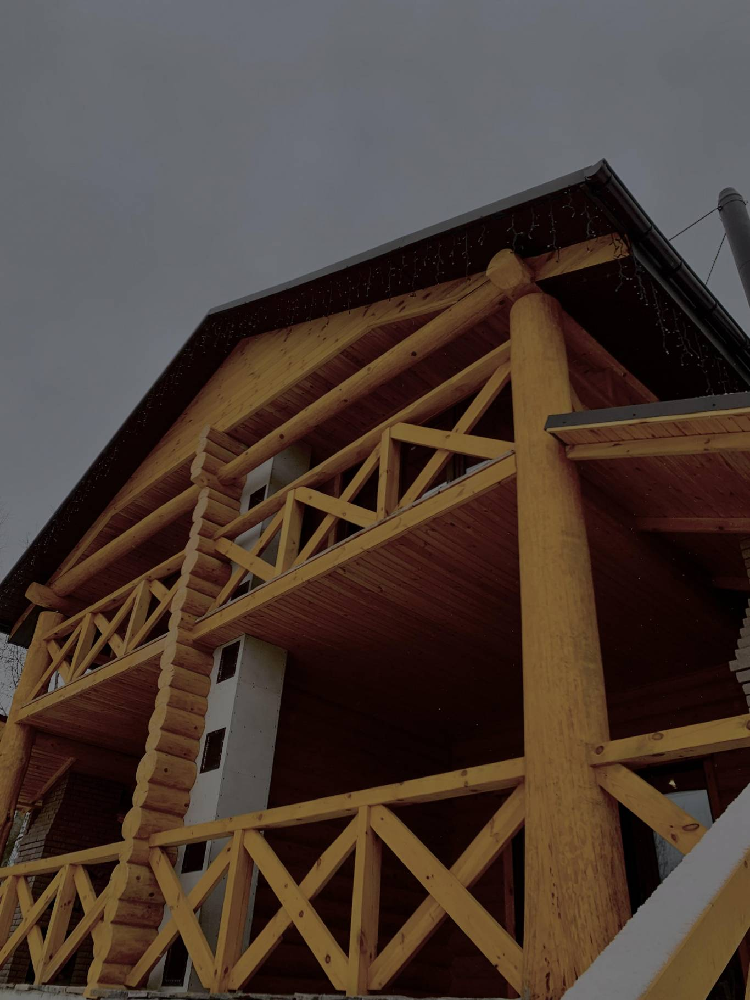 |
| 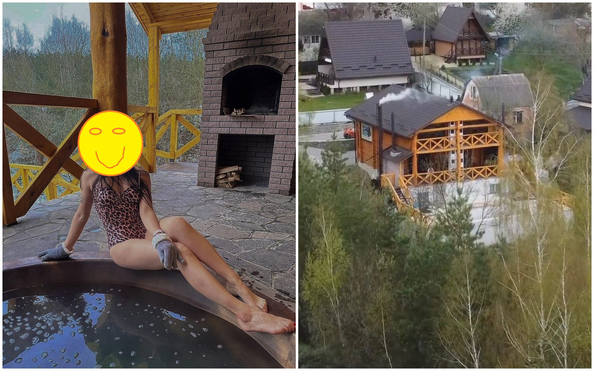 | Купання в чані – СПА-відпочинок з українським-карпатським колоритом, який принесе максимум задоволення і зміцнить здоров’я. Процедура має омолоджувальний ефект, знімає втому, виводить токсини, зміцнює серцево-судинну систему та посилює імунітет. |
Тіло зігрівається завдяки гарячій воді, температура якої поступово піднімається в чавунній чаші. Каміння на дні оберігає від опіків та утримує тепло. Після чану можна сміливо занурюватися у купіль з холодною водою. |
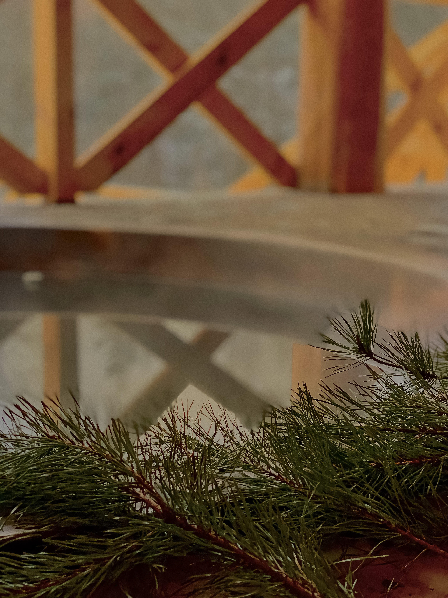 |
Послуги
Будиночок та Чани
| 1. Двоповерховий будиночок з чаном на добу (заселення о 15:00, виселення до 12:00 наступного дня) 6000 грн. | 2. Перший поверх будинку з чаном без ночівлі (заселення о 15:00, виселення до 23:30) 4000 грн. |
У Вашому користуванні: |
У Вашому користуванні: |
- кухня-вітальня з усім необхідним посудом та технікою; |
- кухня-вітальня з усім необхідним посудом та технікою; |
- санвузол з душем, рушниками та змінним взуттям; |
- санвузол з душем, рушниками та змінним взуттям; |
- приватна тераса; |
- приватна тераса; |
- зона барбекю; |
- зона барбекю; |
- чан на дровах; |
- чан на дровах; |
- купіль з холодною водою; |
- купіль з холодною водою; |
- басейн (сезонно); |
- басейн (сезонно); |
- 2 розкладні дивани; |
------------------------------------- |
- 2 спальні з ліжками великого розміру, шафою та балконом. |
------------------------------------- |
| 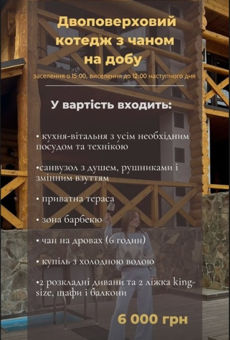 | 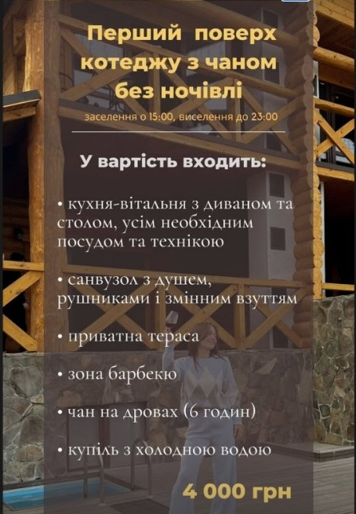 |
Квадроцикли
| 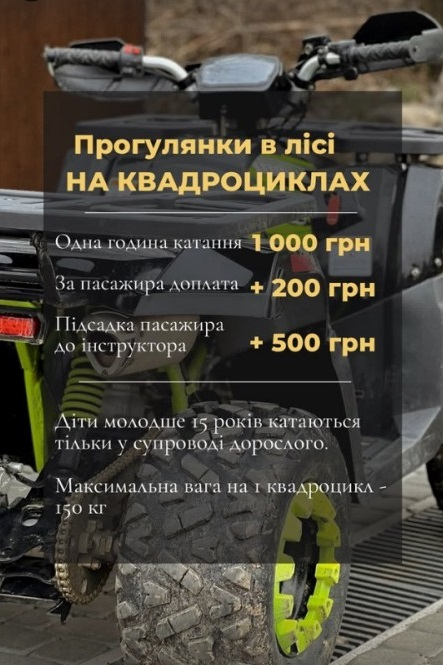 | 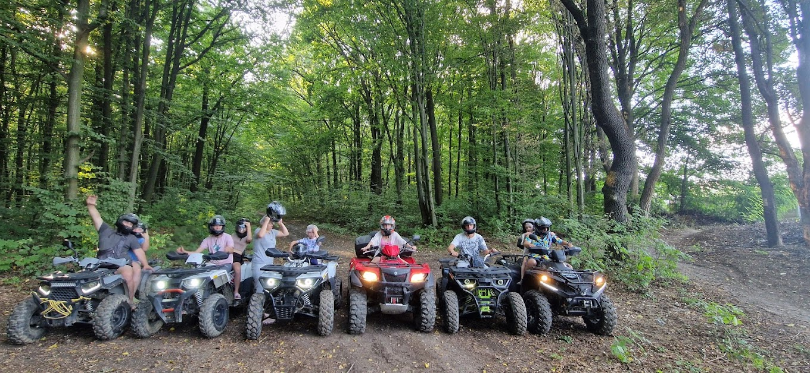 |
| 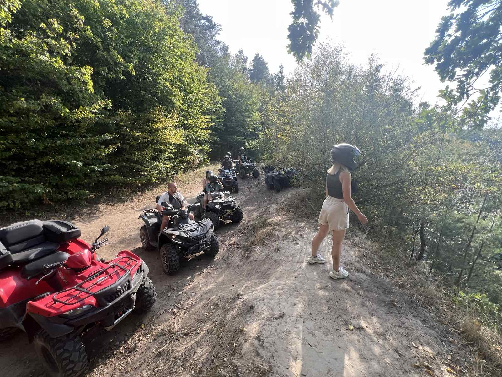 | 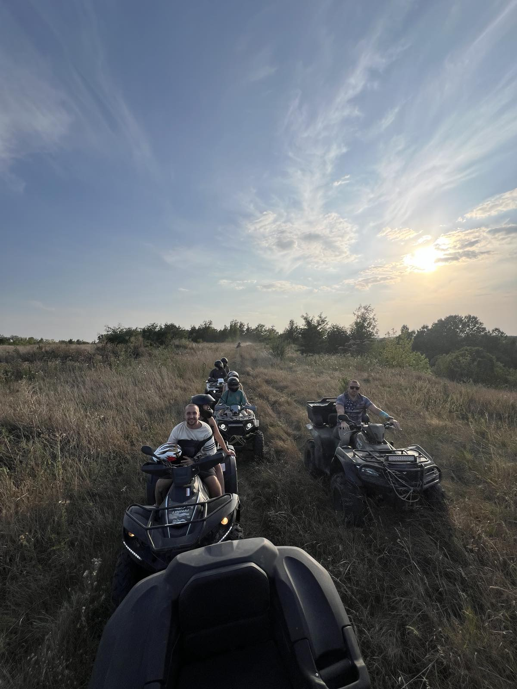 |
| 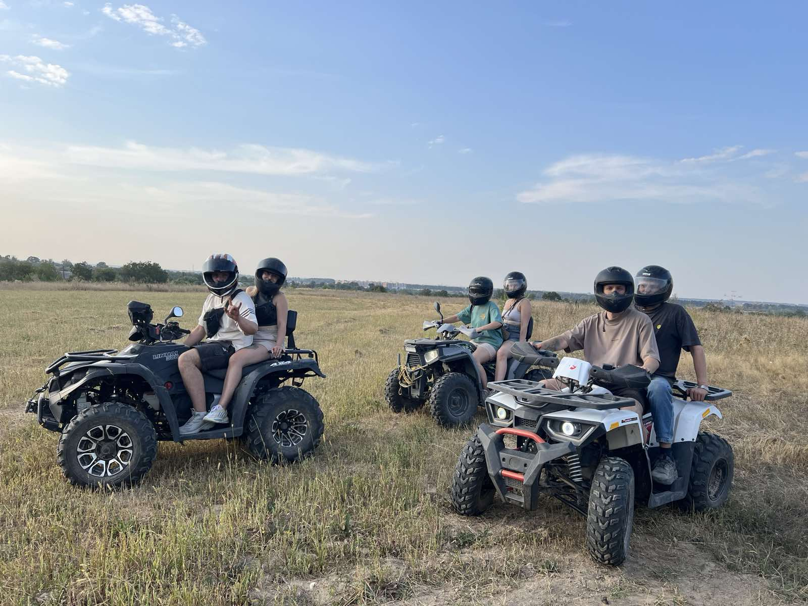 | 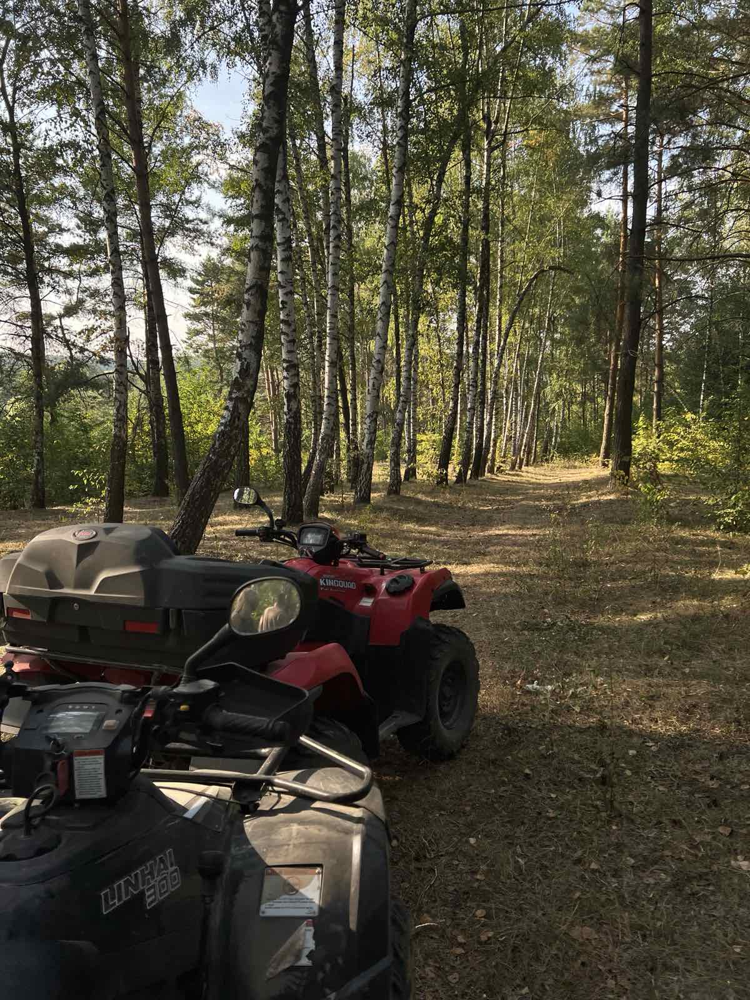 |